Using existing classes
Use set of object from shapes project to manually create a house object. Use existing Square, Circle and Triangle classes. Manually assemble component set to create and display initial design. Develop a new class Rectangle by refactoring Square class. Further refactor Circle and Triangle classes.
Initial design
Copy the shapes project (folder) from the BlueJ chapter01 folder to your session03 folder.
The path to the copied shapes project should be as follows:
../workspaceBlueJ/labs/session03/shapesThis is the house we will construct (Figure 1):
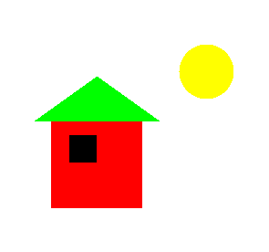
From Figure 1 it's evident we require two rectangle objects to represent the wall and window, a triangle object to represent the roof and a circle object to represent the sun.
We require methods to be available to resize, position and colour the various objects. Let's explore the availabe methods. Recall that you can do this be creating an object of each class on the object bench and then right clicking on the object.
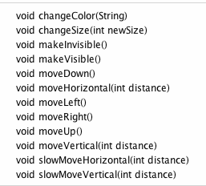
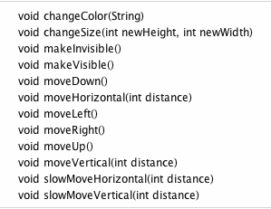
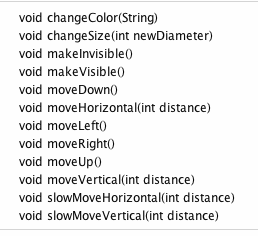
All necessary methods are available to create and manually assemble a picture of the house and sun albeit much trial and error will be required.
Let's begin.
Relaunch BlueJ and open the shapes project in your session03 folder.
Create and make visible a window object from the Square class.
Inspect the state of window. Notice the size, i.e. the length of each side, is 30 units. This is illustrated in Figure 5.
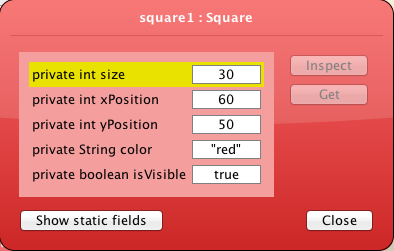
A comparison between Figure 1 and the window object just created suggests that the default square size is suitable for a window and that the wall dimension is approximately three times that of the window.
The triangular roof extends beyond the walls by about half the width of the window therefore the new triangle base width could be approximately four times the default square width.
As a first draft you could work with these dimensions, which are summarised as follows:
Window size : 30 which is the default value
Wall size : 90
Triangle base : 120
Circle diameter : 30
Figure 6 illustrates the necessary objects that you should now create on the object bench.
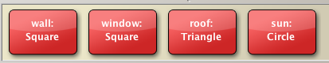
Make these four objects visible. See Figure 7. Only three appear because the two rectangle objects are similar.
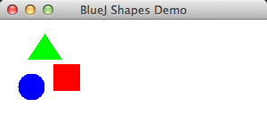
The Sun:
Change colour to yellow
Change size to 50
Move it right 150
Experiment with changes to the position and dimensions of the house components until you are satisfied with the result which should reasonably match that illustrated in Figure 1.
When you are satisfied with the picture you have created, inspect each object and note down its state.
You will require this data to recreate the picture once you have designed a Tree class and wish to introduce a tree object.
You will also require the data when you are designing a Picture class later in this lab.
Create new class Rectangle
Study the picture of the tree in Figure 1 below:
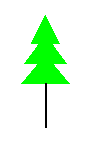
The upper part of the tree can be created from triangles.
We,however, require a new class to create the main stem or trunk of the tree.
A rectangle class will suffice and we will create this by refactoring the Square class as follows.
We can create a Rectangle class by modifying the Square class.
In BlueJ : session03 window you should see Circle, Square and Triangle class diagrams.
Create a new class Rectangle, open the source code in the editor and delete the contents.
Open Square source code, select, copy and paste into the Rectangle class.
- Alternatively, in Finder (Mac), Explorer (Windows) or similarly in other OSs, save the file Square.java as Rectangle.java.
In the method draw(), replace Rectangle with java.awt.Rectangle so as to differentiate this Java class Rectangle from our Rectangle class.
We will refactor the Square class code that you have copied into class Rectangle.
The first modification that you should make is to replace the class name Square with Rectangle anywhere it exists in the source code.
The word square occurs throughout the source: replace it with the word rectangle.
Now, examine the method private void draw(). Notice that a new Java Rectangle object is created here and that two actual parameters are size, the length of the sides of the Rectangle object. Note: this Rectangle class is a different class to the Rectangle class that we are writing.
Rectangle(xPosition, yPosition, size, size)- Change the call to the Rectangle constructor to the following:
Rectangle(xPosition, yPosition, xSideLength, ySideLength)We are discarding the size field and replacing it with two new fields, xSideLength and ySideLength representing the length and height (or breadth) respectively of the rectangle.
Here is the refacored draw() method:
private void draw()
{
if(isVisible) {
Canvas canvas = Canvas.getCanvas();
canvas.draw(this, color,
new java.awt.Rectangle(xPosition, yPosition, xSideLength, ySideLength));
canvas.wait(10);
}
}Delete the field private int size and replace it with
private int xSideLength;
private int ySideLength;Now refactor the constructor. Here is the original Square constructor:
public Square()
{
size = 30;
xPosition = 60;
yPosition = 50;
color = "red";
isVisible = false;
}Delete size and replace with
xSideLength = 60;
ySideLength = 30;The signature of the constructor also requires changing. Here is the original Square constructor
public Square()Fixed (default) values are assigned to the fields within this constructor. However we would like to have control over setting these values at instantiation, therefore we will use the following signature:
Rectangle(int xSideLen, int ySideLen, int xPos, int yPos,String colour)In addition to specifying the size of the rectangle at instantiation, the position and colour of the rectangle will also be specified.
The refactored (overloaded) constructor is, therefore,
public Rectangle(int xSideLen, int ySideLen, int xPos, int yPos,String colour)
{
setState(xSideLen, ySideLen, xPos, yPos,colour);
}Notice that a new helper method setState is invoked within the constructor. This is easily implemented:
public void setState(int xSideLength, int ySideLength, int xPosition, int yPosition,String color)
{
this.xSideLength = xSideLength;
this.ySideLength = ySideLength;
this.xPosition = xPosition;
this.yPosition = yPosition;
this.color = color;
isVisible = true;
}You may well ask why write a separate method to define the object state.
- The reason is that by doing so we can now create an object with the default constructor and later set the state of the object.
- By adopting this approach we are complying with the DRY principle, namely: Do Not Repeat yourself
Later, following instantiation, we may require to relocate the rectangle. This can be achieved by writing a method named moveTo to which we give as parameters the new position (x,y coordinates). Here is a suitable method.
public void moveTo(int x, int y)
{
erase();
xPosition = x;
yPosition = y;
draw();
}It's also necessary to refactor the changeSize method. Here is the original method:
public void changeSize(int size)
{
erase();
this.size = size;
draw();
}It's easily observable what needs to be done: change the signature and replace size with the new fields. Here's the refactored code:
public void changeSize(int xSideLength, int ySideLength)
{
erase();
this.xSideLength = xSideLength;
this.ySideLength = ySideLength;
draw();
}No other changes are necessary. To summarise, we have:
- Generalized the internal call to the Java Rectangle constructor to allow for the construction of a rectangle rather than simply a square.
- Changed the fields so as to allow for sides of different lengths in the polygon (the rectangle).
- Changed the signature of the constructor by introducing a parameter set that fully defines the new rectangle object.
- Written a new method to allow a rectangle object to be repositioned after instantiation.
- Refactored changeSize method.
Perform some simple tests of the new class:
- Compile the Rectangle.
- Create a new object and make visible.
- Inspect object state. See Figure 2.
- Check the method list. See Figure 3.
- Exercise moveTo method and verify correct behaviour.
- Exercise changeSize method and verify correct behaviour.
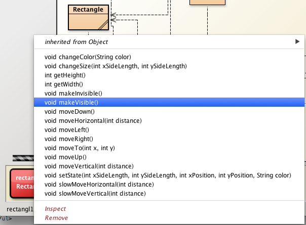
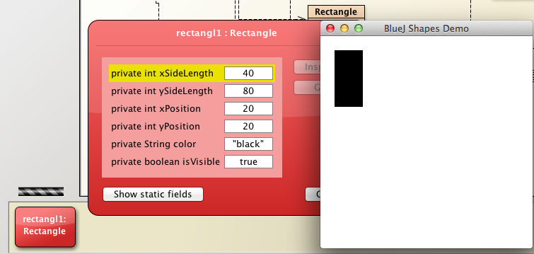
Complete refactored Rectangle
Here is the complete refactored class.
As an exercise at the end of this lab you will be invited to comment this class and generate documentation.
/**
* @file Rectangle.java
* @brief This class describes a rectangle and includes
* methods to change rectangle objects' size and appearance.
* @version 1.0 April 1, 2014
* @author Michael Kolling and David J. Barnes
* @author <your name here>
*/
public class Rectangle
{
private int xSideLength;
private int ySideLength;
private int xPosition;
private int yPosition;
private String color;
private boolean isVisible;
/**
* Constructs a new RectangleBJ defined by default data
*/
public Rectangle()
{
isVisible = false;
// setState(xSideLength, ySideLength, xPosition, yPosition, color)
setState(60, 30, 60, 50, "red");
}
/**
* Constructs a new RectangleBJ defined by user-supplied parameters
* @param xSideLength the length of the rectangle
* @param ySideLength the width or height of the rectangle
* @param xPosition the x-coordinate of the top left corner of the rectangle
* @param yPosition the y-coordinate of the top left corner of the rectanglep
* @param color the colour of the rectangle including perimeter and body
*/
public Rectangle(int xSideLength, int ySideLength, int xPosition, int yPosition, String color)
{
setState(xSideLength, ySideLength, xPosition, yPosition, color);
}
/**
* Public method to facilitate initialization or re-initialization of the rectangle
* @param xSideLength the length of the rectangle
* @param ySideLength the width or height of the rectangle
* @param xPosition the x-coordinate of the top left corner of the rectangle
* @param yPosition the y-coordinate of the top left corner of the rectanglep
* @param color the colour of the rectangle including perimeter and body
*/
public void setState(int xSideLength, int ySideLength, int xPosition, int yPosition, String color)
{
this.xSideLength = xSideLength;
this.ySideLength = ySideLength;
this.xPosition = xPosition;
this.yPosition = yPosition;
this.color = color;
isVisible = true;
}
public int getWidth()
{
return xSideLength;
}
public int getHeight()
{
return ySideLength;
}
public void makeVisible()
{
isVisible = true;
draw();
}
public void makeInvisible()
{
erase();
isVisible = false;
}
public void moveTo(int x, int y)
{
xPosition = x;
yPosition = y;
makeVisible();
}
public void moveRight()
{
moveHorizontal(20);
}
public void moveLeft()
{
moveHorizontal(-20);
}
public void moveUp()
{
moveVertical(-20);
}
public void moveDown()
{
moveVertical(20);
}
public void moveHorizontal(int distance)
{
erase();
xPosition += distance;
draw();
}
public void moveVertical(int distance)
{
erase();
yPosition += distance;
draw();
}
public void slowMoveHorizontal(int distance)
{
int delta;
if(distance < 0)
{
delta = -1;
distance = -distance;
}
else
{
delta = 1;
}
for(int i = 0; i < distance; i++)
{
xPosition += delta;
draw();
}
}
public void slowMoveVertical(int distance)
{
int delta;
if(distance < 0)
{
delta = -1;
distance = -distance;
}
else
{
delta = 1;
}
for(int i = 0; i < distance; i++)
{
yPosition += delta;
draw();
}
}
public void changeSize(int xSideLength, int ySideLength)
{
if(xSideLength > 0 && ySideLength > 0)
{
erase();
this.xSideLength = xSideLength;
this.ySideLength = ySideLength;
draw();
}
else
{
System.out.println("Enter positive dimensions");
}
}
public void changeColor(String color)
{
this.color = color;
draw();
}
private void draw()
{
if(isVisible) {
Canvas canvas = Canvas.getCanvas();
canvas.draw(this, color,
new java.awt.Rectangle(xPosition, yPosition, xSideLength, ySideLength));
canvas.wait(10);
}
}
private void erase()
{
if(isVisible) {
Canvas canvas = Canvas.getCanvas();
canvas.erase(this);
}
}
}Create and introduce Tree object into picture
Now that we have a class to create rectangles we can proceed to manually assemble a tree.
Create a set of tree objects as illustrated in Figure 1.

Make a first approximation at creating a suitable tree trunk object by instantiating a Rectangle object with the attributes illustated in Figure 2.
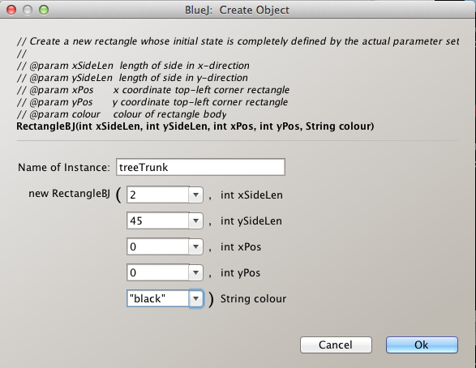
Invoke the tree trunk object's makeVisible method. The object will be rendered in the top left corner of the display window.
Now create the remaining tree component objects: three triangles using the only constructor available - the default constructor.
Display all objects.
Manually move the objects into position using suitable methods such as moveDown, moveLeft and so on.
Vary the triangle base widths to create a suitable appearance.
The result should be somewhat similar to that shown in Figure 3.
Now, using the data saved earlier when you created the house, manually recreate the complete picture. See Figure 4.
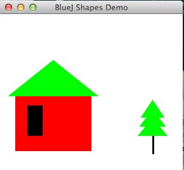
Add methods & refactor constructor Circle and Triangle classes
We have added a method moveTo(int,int) to the Rectangle class.
This method allows us to move objects of this class to a precise location of our choosing.
Let's add a similar method to each of Triangle and Circle classes now as this method will prove extremely useful during the next steps of the lab as we create Tree, House and Picture classes and their objects.
Triangle class
In the BlueJ editor, place cursor on the Triangle graphic, right click and select Open Editor.
Add the method moveTo illustrated in Figure 1.
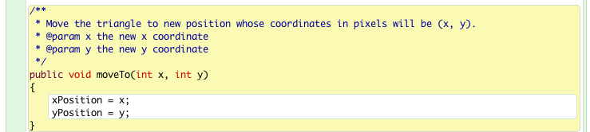
Refactor the constructor and add a setState method in a similar manner as in the Rectangle class. Here is the refactored code, which you should add to Triangle class:
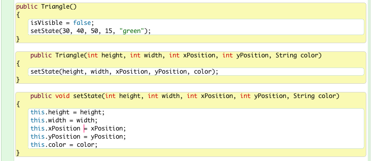
Circle class
Repeating the procedure above, add a method moveTo to the Circle class (Figure 3).
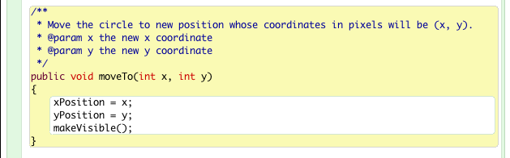
As with Triangle and Rectangle, create an overloaded constructor and accompanying setState method.
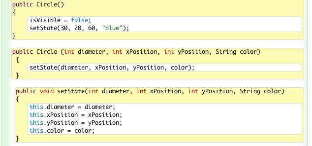
Create House class
We have seen that a house object may be assembled from a triangle and two rectangles.
Let's now capture this behaviour in a class called House.
The advantage in doing so will become obvious when the class has been completed and its methods' behaviours demonstrated.
Place the cursor in the IDE window, still in the BlueJ shapes project in session03 folder, right click and select New Class (Figure 1).
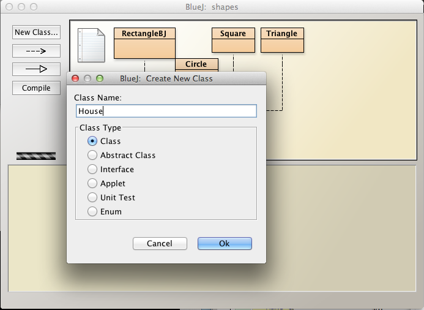
A rectangle (class diagram) representing the new House class should appear in the BlueJ IDE window (Figure 2).
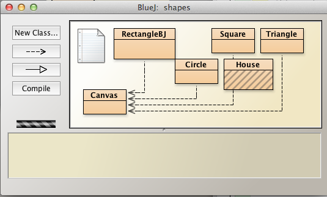
Click on this House representation in the IDE, right click and open the editor.
This will launch the House class skeleton source code file (Figure 3).
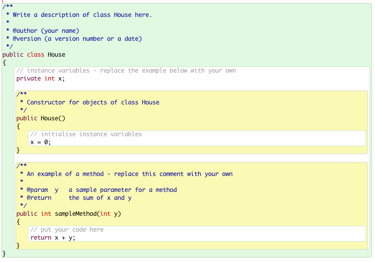
Delete all except the following so that we begin with just the outer class wrapper.
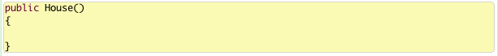
Check that the above compiles.
Let's now design the House class.
It will have the following fields:
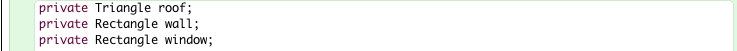
We could have used the Square class for the wall and window but since a square is a particular instance of a rectangle, using the rectangle is more general and thus gives us more flexibility.
Next we will add a default constructor, invoke private methods to create and initialize the fields and implement these methods with data:
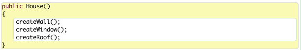
Here are the private creation methods:
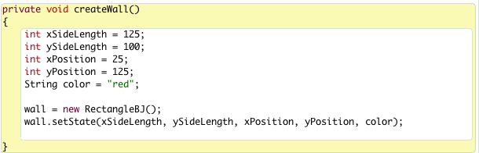
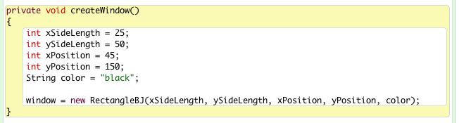
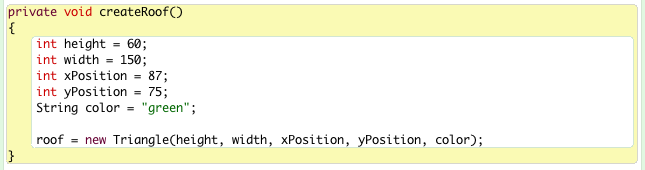
Displaying a House object
Let's subject the House class to some rudimentary tests:
- Create a House object on the object bench. Right click on the object to view its behaviours.
- There's not much to see because we haven't coded any behaviours.
- Also, the object is not displayed. Let's correct this omission :
- Add a method void display(boolean show).
- If show is true the house will be displayed
- If show is false the house will be hidden.
Here's the source: add it to the class, compile and test.
public void display(boolean show)
{
if(show)
{
roof.makeVisible();
wall.makeVisible();
window.makeVisible();
}
else
{
roof.makeInvisible();
wall.makeInvisible();
window.makeInvisible();
}
}Here is what's created using the default coordinates that we've provided.
You may be happy with this.
On the other hand, you may wish to make some architectural changes. (Figure 1).
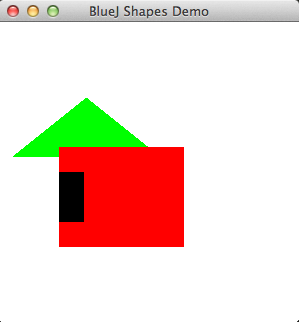
House source code
Here is the complete source code for the House class (file House.java):
public class House
{
private Triangle roof;
private Rectangle wall;
private Rectangle window;
public House()
{
createWall("red");
createWindow();
createRoof();
}
public House(String color)
{
createWall(color);
createWindow();
createRoof();
}
private void createWall(String color)
{
int xSideLength = 125;
int ySideLength = 100;
int xPosition = 25;
int yPosition = 125;
wall = new Rectangle(xSideLength, ySideLength, xPosition, yPosition, color);
}
private void createWindow()
{
int xSideLength = 25;
int ySideLength = 50;
int xPosition = 45;
int yPosition = 150;
String color = "black";
window = new Rectangle(xSideLength, ySideLength, xPosition, yPosition, color);
}
private void createRoof()
{
int height = 60;
int width = 150;
int xPosition = 87;
int yPosition = 75;
String color = "green";
roof = new Triangle(height, width, xPosition, yPosition, color);
}
public void display(boolean show)
{
if(show)
{
roof.makeVisible();
wall.makeVisible();
window.makeVisible();
}
else
{
roof.makeInvisible();
wall.makeInvisible();
window.makeInvisible();
}
}
}